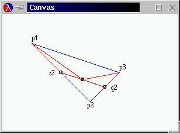

The problem statement correctly specifies that "[d]ecreasing the price by a dime ($.10) increases attendance by 15." Later, the book includes the sentence "The base attendance at a price of five dollars is 120, and for each 15 cents less than five dollars, 10 more attendees show up." This second claim is incorrect.
Thanks to Chuck Floyd, Kerrville, TX
The book specifies that
;;A shape is either ;;1. a circle, or ;;2. a structure.Naturally, this should be
;;A shape is either ;;1. a circle, or ;;2. a square.
Thanks to Jamie Raymond, Houston, TX
The book incorrectly defines our-cons as:
(define (our-cons a-value a-list) (make-pair a d))It should be
(define (our-cons a-value a-list) (make-pair a-value a-list))
Thanks to Hrvoje Blazevic (Master, LPG/C Harriette N)
(define (our-cons a-value a-list)
(cond
[(empty? a-list) (make-pair any a-list)]
[(our-cons? a-list) (make-pair any a-list)]
[else (error 'cons "list as second argument expected")]))
should be
(define (our-cons a-value a-list)
(cond
[(empty? a-list) (make-pair a-value a-list)]
[(our-cons? a-list) (make-pair a-value a-list)]
[else (error 'our-cons "list as second argument expected")]))
Thanks to Nguyen Cong Vu, Ho Chi Min City, Viet Nam
The book mistakenly specifies random as a function that
consumes a natural number. Instead, random consumes an integer
greater than or equal to 1 (and less than or equal to 2147483647).
Thanks to Marvin D. Hernandez, Miami, FL
The exercise had been misinterpreted twice. The new wording is: and produces a list of that many numbers, each randomly chosen from the range from 20 to 120.
Develop the functiontie-dyed. It consumes a natural number and produces a list of that many numbers, each randomly chosen in the range from20to120. Usetie-dyedto applydraw-circlesfrom exercise~9.5.8.
Thanks to Stephen Bloch, New York, NY
The section switches from the development of a descending sort to that
of an ascending sort during the transition from the development of
sort to the development of insert.
Figure 33 (page 175) should be as follows:
;; |
Thanks to Daniel P. Friedman, Bloomington, IN
"make-structure" should be "make-mail".
We have added the following paragraph at the end of the page:
Also, use the Scheme operation append, which consumes two lists
and produces the concatenation of the two lists. For example:
(append (list 'a 'b 'c) (list 'd 'e)) = (list 'a 'b 'c 'd 'e)
Thanks to Stephen Bloch, Garden City, NY
(list-pick (cons 'a empty) 3) ;; expected value: falseshould be(list-pick (cons 'a empty) 3) ;; expected value: (error 'list-pick "...")
Thanks to Hrvoje Blazevic (Master, LPG/C Harriette N)
Replace all occurrences of
(define (list-pick n alos)
with
(define (list-pick alos n)
Thanks to Jesse Janzer and Matthew Litman, Atlanta, GA.
Replace all occurrences of false with
(error 'list-pick "list too short")
Thanks to Hrvoje Blazevic (Master, LPG/C Harriette N)
4. (+ (local ((define (f x) (g (+ x 1))) (define (g x y) (+ x y))) (f 10)) 555)should be
4. (+ (local ((define (f x) (g (+ x 1) 22)) (define (g x y) (+ x y))) (f 10)) 555)
Thanks to Hrvoje Blazevic (Master, LPG/C Harriette N)
Abstract the functionsExercise 21.4.2 should read:draw-a-circleandclear-a-circleinto a single functionprocess-circle.
Definetranslate-circleusingprocess-circle.
Abstract the functionsdraw-a-rectangleandclear-a-rectangleinto a single functionprocess-rectangle.
Definetranslate-rectangleusingprocess-rectangle.
Thanks to Hrvoje Blazevic (Master, LPG/C Harriette N)
The definition of sort is incorrect. It should be as
follows:
|
Thanks to David Kay, Irvine, CA
The enumerations are missing a number each. Here are the correct versions:
1. 18 is evenly divisible by 1, 2, 3, 6, 9, and 18; 2. 24 is evenly divisible by 1, 2, 3, 4, 6, 8, 12, and 24.
Thanks to Daniel P. Friedman, Bloomington, IN
The sequence of Bezier images is misleading. Here is an improved version:
|  |
Design file->list-of-checks. The function consumes a file of
numbers and outputs a list of restaurant records.
Thanks to Hrvoje Blazevic (Master, LPG/C Harriette N)
The application of make-last-item in invert
receives the arguments in the wrong order:
(define (invert alox)
(cond
[(empty? alox) empty]
[else (make-last-item (first alox) (invert (rest alox)))]))
|
Thanks to Daniel P. Friedman, Bloomington, IN
"Its solution is x = 2, y = 1, and z = 1"in reference to the list-specified system of equations. Instead, it should read:
"Its solution is x = 1, y = 1, and z = 1"
Thanks to Hrvoje Blazevic (Master, LPG/C Harriette N)
Figure 81 contains a mistake in the definition of
vector-sum. Here is the correct version:
;; |
Thanks to Nguyen Cong Vu, Open University, Ho Chi Minh City, Viet Nam
The function definition in exercise 37.2.7 should read as follows:
(define (reveal-list! cw sw guess)
(local ((define (reveal-one chosen-letter status-letter)
(cond
[(symbol=? chosen-letter guess) guess]
[else status-letter])))
(set! status-word (map reveal-one cw sw))))
|
Thanks to Hrvoje Blazevic (Master, LPG/C Harriette N)
In exercise 38.4.3, part 3 the program is illegal in Advanced Scheme. Here is the corrected version:
(define (make-box x)
(local ((define contents x)
(define (new y)
(set! contents y))
(define (peek)
contents))
(list new peek)))
|
Thanks to Dung X. Nguyen, Houston, TX.
In exercise 38.4.4 the make-box function is illegal in
Advanced Scheme. Here is the corrected version:
(define (make-box x)
(local ((define contents x)
(define (new y)
(set! contents y))
(define (peek)
contents))
(list new peek)))
|
Thanks to Hrvoje Blazevic (Master, LPG/C Harriette N)
The contract and header for count-a-vowel are repeatedly
misstated. Here is the correction:
;; |
Thanks to Hrvoje Blazevic (Master, LPG/C Harriette N)
The definition of for-interval should be as follows:
|
Thanks to Hrvoje Blazevic (Master, LPG/C Harriette N)